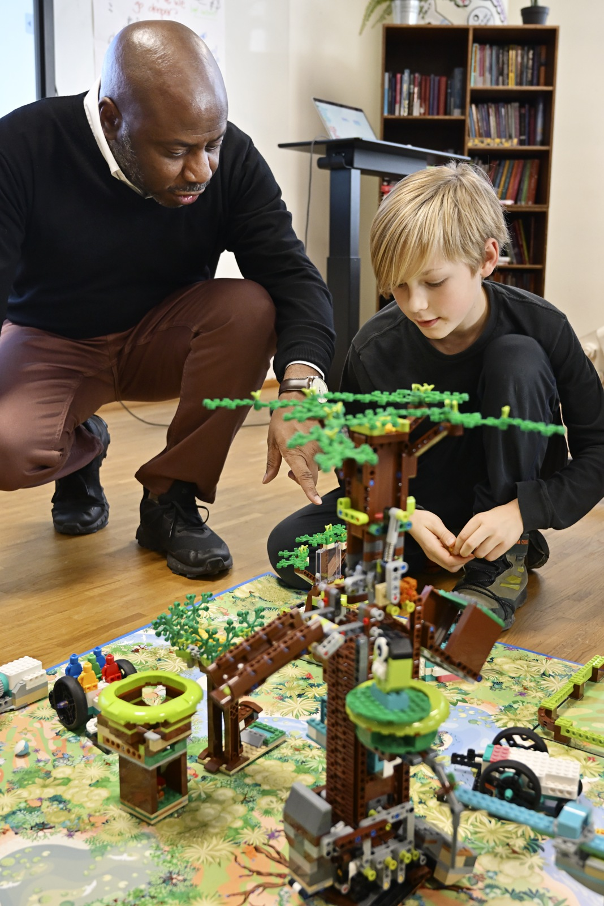

Continuidade com SPIKE
Founders Edition
Para escolas que querem dar continuidade ao trabalho com os equipamentos LEGO® Education SPIKE™.
Explore 6–10 anos
LEGO® Education SPIKE™ Essential
Challenge 9–16 anos
LEGO® Education SPIKE™ Prime
Participação
Escolha o percurso adequado à idade dos alunos e ao equipamento que a escola já possui. A Fundação da Juventude ajuda a preparar os próximos passos.
Continuidade com SPIKE
Para escolas que querem dar continuidade ao trabalho com os equipamentos LEGO® Education SPIKE™.
LEGO® Education SPIKE™ Essential
LEGO® Education SPIKE™ Prime
Preparada para a sala de aula
Um professor pode acompanhar várias equipas e envolver os alunos em atividades práticas de construção e programação. O equipamento-base pode ser organizado em formato turma, para trabalhar com várias equipas.
Um percurso de 10 sessões.
16+ horas de atividades, com desafio de programação e projeto de ciência, tecnologia, engenharia e matemática.
Indique no formulário o equipamento disponível na escola. Consulte os custos de participação e materiais.
Passo a passo
Manifeste interesse até 31 de outubro de 2026.
Confirmação da inscrição até 15 de novembro de 2026.
Preparação das equipas a partir de 15 de novembro de 2026.
Construir, programar, testar e desenvolver soluções até 28 de fevereiro de 2027.
Março de 2027. Todas as equipas participantes acedem à Final Nacional.

Acompanhamento às escolas
A participação inclui recursos, formação, acesso à plataforma e apoio da Fundação da Juventude.
A manifestação de interesse funciona como pré-inscrição. O contacto seguinte permite esclarecer a modalidade, o equipamento e as condições de participação.
Quero Participar